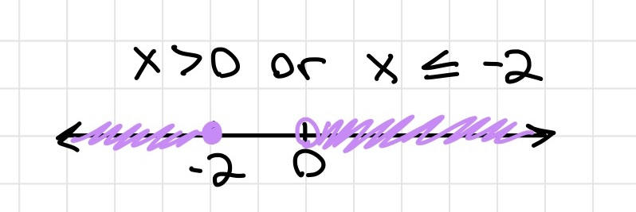

Algebra 2 may seem scary, but don't worry, we will help you succeed :).
Many of the concepts in Algebra 1 are in Algebra 2 or in trigonometry. If you can't find something on this page, it is most likely on the Algebra 1 page or the Trigonometry page.
Properties
Associative Property: rearranging parantheses will not alter the answer (ex. 3 + (5 + 2) = (3 + 5) + 2)
Commutative Property: changing the order of operands does not alter the answer (ex. 2 + 5 = 5 + 2)
Distributive Property: a number next to parantheses will multiply with every number inside (ex. 3(7 + 2) = 21 + 6)
Identity Property: the answer will be the same number that was added by 0 or multiplied by 1 (ex. 2 · 1 = 2)
Inverse Property: when a number is added with itself in its opposite sign, the answer is 0 (ex. 5 + (-5) = 0)
Graph of an inequality on a coordinate plane
Inequalities
Open and Closed Holes/Circle
An open hole/circle represents greater/less than (> <)
An closed hole/circle represents greater/less than or equal to (≥≤)
And
The value of x is in between two values. x has to satisfy BOTH inequalities
Ex. -2 < x < 3

Or
The value of x is NOT in between two values. x has to satisfy EITHER inequality.
Ex. x > 0 or x ≤ -2. x can't be -1 since it is not greater than 0 or less than -2.
Step function
Piecewise Functions
Multiple functions with set conditions in the form of if ___
Step function: a set of functions that make a stair-like graph
Absolute Value
Distance from 0 to the number line
Ex. |x| = 9 to -9, 9
Slope
m > 0: positive/rising slope
m < 0: negative/falling slope
m = 0: horizontal slope
m = undefined: vertical slope
Types of Lines
Parallel Lines
Same slope, different y-intercept
Aligned if a straight line is drawn vertically
Perpendicular Lines
Reciprocal slope (ex. -3 is perpendicular to -1/3)
Makes an X shape
y = mx + b
Slope in y-intercept form
ax + by = c
Standard form
For solving the y and x intercepts of the equation
y - y1 = m(x - x1)
Point slope form
For finding the slope equation using a point and slope (point slope form :D)
Direct Variation
y = kx
k = a number similar to m
Ex. if k = 7/2, what is y when x is 12? y = 7/2 · 12 -> 42
System of Linear Equations with 2 variables
Graphing
The intersection of the linear equations is the answer to the system
Substitution
Substitute one equation into the other's x or y respectively
Best used when equations in standard form are given
Elimination
Eliminate one variable to solve for the other by adding or subtracting
Best used when you can eliminate a variable by multiplying one equation with a whole number. Better yet, no multiplication is needed.
System of Linear Equations with 3 variables
Use substitution/elimination to eliminate one variable 2 times. You should have 2 new equations with 2 variables
Use the 2 equations to eliminate another variable. Solve for the remaining variable.
Plug the solved variable into one of the equations with 2 variables to solve for another variable
Use the two solved variables to solve for the last variable. Plug both of them into one of the original 3 variable equations
Polynomials
Parabola Functions
Quadratic form: ax2 + bx + c
Standard form: f(x) = a(x - h)2 + k
x intercept form: a(x-p)(x-a)
Vertex in standard form: (h, k) (when k = y and h = x)
Vertex in quadratic form: (-b/(2a), f(-b/(2a)))
Vertex in x intercept form: V((p+q)/2, f((p+q)/2))
A few notes:
a2 + 2ab + b2 = (a + b)2
(a + b)(a - b) = a2 - b2
Quadratic Formula
Used to find the zeros of the binomials
When a trinomial isn't factorable, use the quadratic formula to get the exact answers
X Box Method for Factoring
Put "a · c " at the top of the X and "b" at the bottom of the X
Find two numbers that multiply to "a" AND add up to "b"
One they are found, make two binomials like this: (ax2 + 1st number)(2nd number + c)
Take out a common factor for each binomial.
If the binomial in the parantheses are the same, which they should be, put the factors into their own binomial in parantheses.
Radicals
Index: how many times a number is multiplied to get the radicand
Radicand: the number inside the root
Imaginary numbers
i = √-1; i2 = -1
Complex Conjugates
Complex conjugates: a + bi and a - bi
Ex. the complex conjugate of 2 - 3i is 2 + 3i
Multiply by the complex conjugate of an imaginary fraction to simplify it